The Stone Age marks a period of prehistory in which humans used primitive stone tools. Lasting roughly 2.5 million years, the Stone Age ended around 5,000 years ago when humans in the Near East began working with metal and making tools and weapons from bronze. During the Stone Age, humans shared the planet with a number of now-extinct hominin relatives, including Neanderthals and Denisovans.
The oldest pottery known was found at an archaeological site in Japan. Fragments of clay containers used in food preparation at the site may be up to 16,500 years old. Stone Age food varied over time and from region to region, but included the foods typical of hunter gatherers: meats, fish, eggs, grasses, tubers, fruits, vegetables, seeds and nuts.
- Homo sapiens, the first modern humans, evolved from their early hominid predecessors between 200,000 and 300,000 years ago. They developed a capacity for language about 50,000 years ago.
- The first modern humans began moving outside of Africa starting about 70,000-100,000 years ago.
Enigmatic Ancient Wheel: The 300-Million-Year-Old Wheel and Anomalous Ancient Tracks Across the World
The following article is extracted from The Myth Of Man by J.P. Robinson. All credit to the author, and please kindly note that it was edited to fit this venue. Along with some healthy MM additions.
In 2008, a curious find was discovered down a coal mine in the Ukrainian city of Donetsk.
As it could not be safely or successfully cut out due to the nature of the sandstone in which it was embedded, the mysterious artifact looking much like an ancient wheel remains in situ down the mine.
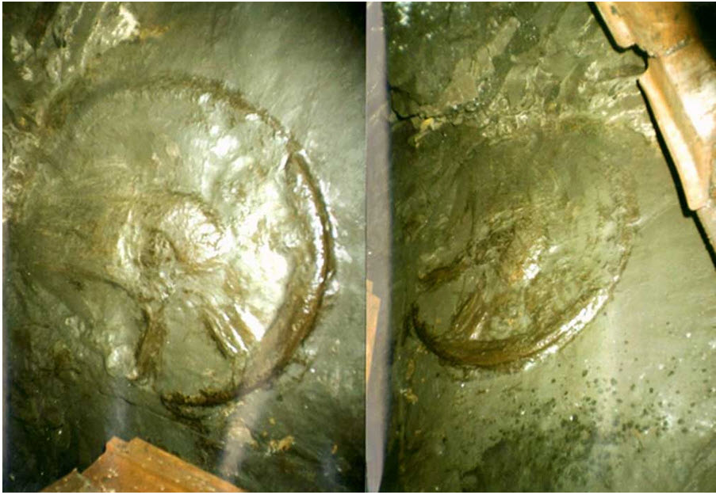
Whilst drilling the coal coking stratum named J3 ‘Sukhodolsky’ at a depth of 900 meters (2952.76 feet) from the surface, workers were surprised to find what appears to be the imprint of a wheel above them in the sandstone roof of the tunnel that they had just excavated.
Thankfully, photographs of the unusual imprint were taken by the Deputy Chief V.V. Kruzhilin and shared with the mine foreman S. Kasatkin, who brought news of the find to light.
Without being able to further explore the site and inspect the imprint at close hand, we are left with only the photographs as evidence of their existence (there was more than one imprint) and the word of a group of Ukrainian miners.
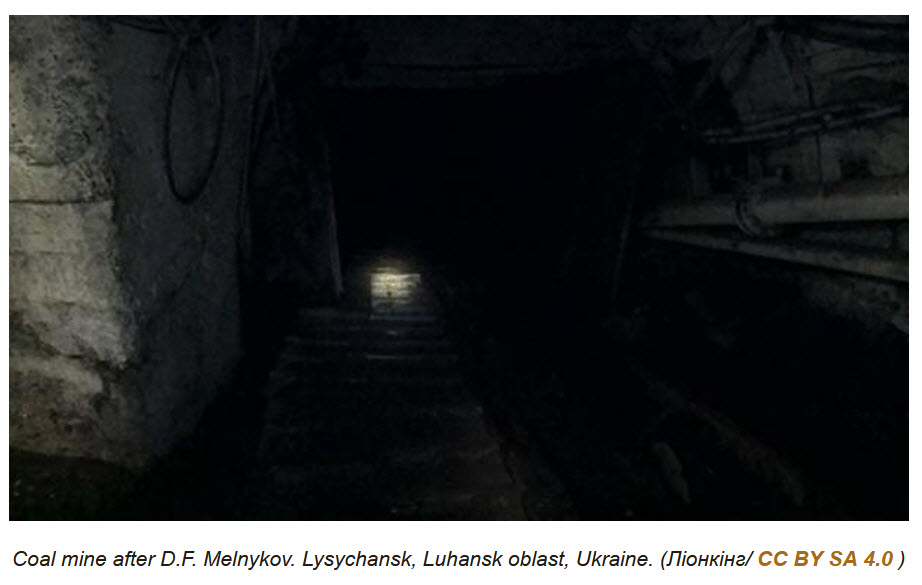
Discovering the Wheel
Without being able to definitively date the strata in which the fossilized wheel print was found, it has been noted that the Rostov region surrounding Donetsk is situated upon Carboniferous rock aged between 360-300 million years ago.
As well as the widely distributed coking coals have derived from the middle to late Carboniferous; suggesting a possible age of the imprint at around 300 million years old.
This would mean that an actual wheel became stuck millions of years ago and dissolved over time due to a process called diagenesis, where sediments are lithified into sedimentary rocks, as is common with fossil remains.
Diagenesis () is the process that describes physical and chemical changes in sediments first caused by water-rock interactions, microbial activityand compaction after their deposition. The increase of pressure and temperature only starts to play a role as sediments get buried much deeper in the Earth's crust. In the early stages, the transformation of poorly consolidated sediments into sedimentary rock (lithification) is simply accompanied by a reduction in porosity and water expulsion (clay sediments), while their main mineralogical assemblages remain unaltered. As the rock is carried deeper by further deposition above, its organic content is progressively transformed into kerogens and bitumens. The process of diagenesis excludes surface alteration (weathering) and deep metamorphism. There is no sharp boundary between diagenesis and metamorphism, but the latter occurs at higher temperatures and pressures. Hydrothermal solutions, meteoric groundwater, rock porosity, permeability, dissolution/precipitation reactions, and time are all influential factors. -Wikipedia
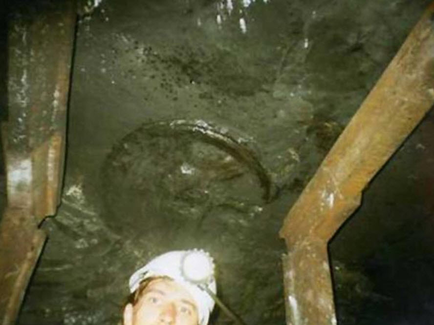
A miner below a wheel imprint in the mine. (Author provided) SMXL
The following is an extract from a letter written by S. Kasatkin (translated from Ukrainian) in reference to his testimony of having been witness to the anomalous wheel imprint discovered by his team of miners in 2008:
‘This finding is not a PR action. In due time (2008), we as a team of engineers and workers asked the mine director to invite scientists for detailed examination of the object, but the director, following the instructions of the then owner of the mine, prohibited such talks and instead only ordered to accelerate work on passing through this section of lava and on fast ‘charging’ of the section with mining equipment. Owing to that, this artifact and the smaller one found during further work came to be in a tunnel blockage and could not be taken out and studied. It is good that there were people, who in spite of the director’s prohibition, photographed this artifact. I have connections with the people who first discovered these imprints and also with those who photographed them. We have more than a dozen witnesses. As you understand, the admission in the mine is strictly limited (it is dangerous on sudden emissions) and to obtain such permit is rather difficult. The ‘wheel’ was printed on sandstone of the roof. Guys (drifters) tried to ‘cut away’ the find with pick hammers and to take it out to the surface, but sandstone was so strong (firm) that, having been afraid to damage a print, they have left it in place. At present the mine is closed (officially since 2009) and access to the ‘object’ is impossible - the equipment is dismantled and the given layers are already flooded.(with water)’

The wheel.
With only this written testimony and that of the other witnesses, the photographs remain the only proof of this anomalous imprint, but it must be deemed worthy of mention despite any difficulties verifying the details beyond that which you have read.
For, if the photographic evidence is indeed legitimate, then one must question how a man-made wheel became embedded in such ancient strata, when according to scientific orthodoxy man had not even evolved yet.
Contemporaneous Cartwheel
Here is the design of a cartwheel made out of wood that was common prior to the industrial age.
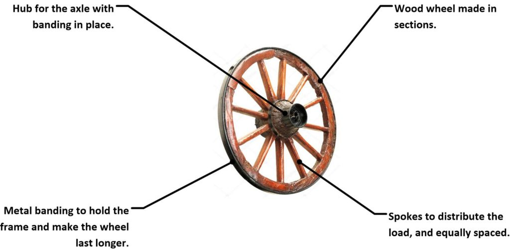
Yeah.
You all might want to compare it with the wheel found in the 300 million year old limestone.
A curious thing about this cartwheel
it’s very difficult to make out, and (as far as I know) no one bothered to measure the wheel, from the pictures, it appears diminutive.
Most cartwheels that I have seen and know of from my personal experiences tend to be large. They are perhaps, 150 cm in diameter. (With obvious variations of course). This is roughly five feet in diameter.
This wheel appears to be much less than that. Maybe 100 cm in diameter, or roughly three feet.
Judging from this singular article, and extrapolating with many assumptions, you might want to suggest that the species, or creatures that manufactured this wheel were diminutive in size as well. Perhaps, 120 cm high (4 feet).
If so, then this would be in agreement with the hand bell that was found in a lump of coal that is contemporaneous with this wheel.
Go here to read about this…
Another curious thing…
The wheel apparently has metal banding on both the hub and the wheel. This implies directly, that the species that manufacturing this wheel was also able to work in metal.
Why is this an OOPART?
It’s not just that this wheel predates the “bronze age” of human technological advancement, but it predates all primates.
The wheel pre-dates to the time of the dinosaurs.
The Earth, 300 years ago…
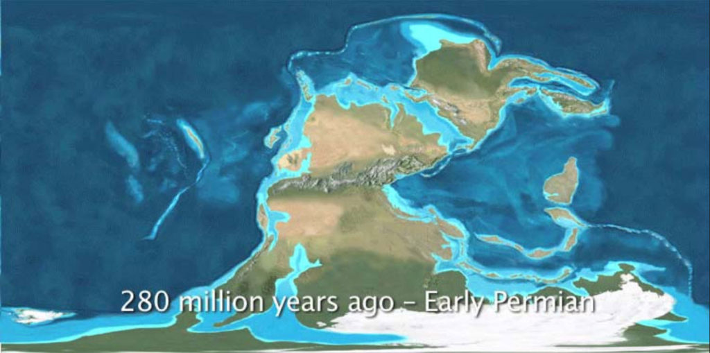
This was a time before even the mighty dinosaurs roamed the Earth. A time in history when the plants and animals would be unrecognizable to us today, well most of them.
You’ll probably already know that at this time the Earth’s continents were fused together in the supercontinent Pangea. This supercontinent would eventually break up and produce the modern configuration of continents we are all too familiar with.
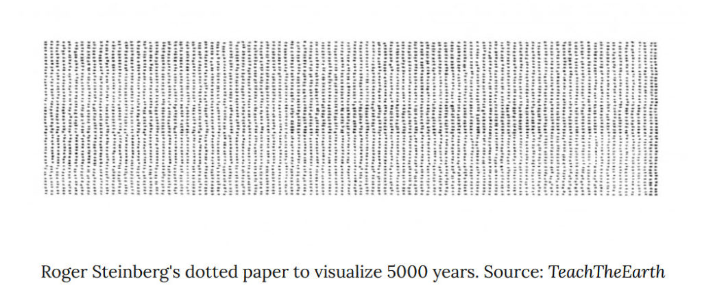
Professor Roger Steinberg from Del Mar College hand drew a sheet of paper with 5000 dots on it. He then photocopied it 200 times and stuck them all together to show his students. When shown the paper, he asked her students to guess the number of dots they could see. Estimates ranged from 4.6 billion (the age of the Earth) to 13.7 billion (the age of the Universe).
They were all shocked when he revealed it was only actually 1 million. Now imagine 60,000 of those sheets stuck together and you’ll “get a feel” for the length of time we are talking about here. Given the average dimensions for A4 paper (21 by 29.7 cm or 0.06 m2) that would cover an area of 3600 m2!
Now imagine this 300 times larger!
Incredible!
300 million years ago puts us firmly within the Palaeozoic period of geological history, technically speaking within the Permian-Pennsylvanian boundary. This was a time of great change in the animal kingdom. Amphibians had evolved into reptiles that will one day give birth to all-conquering dinosaurs in a few tens of millions of years.
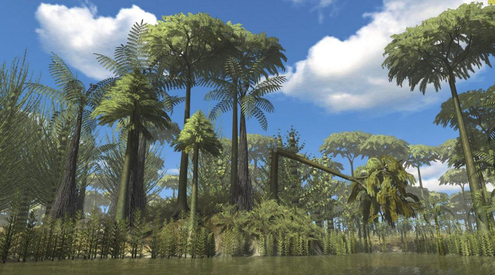
The plants that were in the carboniferous period were very similar to those present in a tropical climate. It was known for swamp forest which had lots of life. Lycopsids were abundant during the Carboniferous period and were a big source of carbon. There was a lot of coal during this time period so it helped the coal a lot. Then the lycopsids went extinct due to a drying trend. After that ferns and sphenopsids were dominant.
The land was dominated by the ancestors of all mammals, the Synapsids, and the ancestor of all reptiles and birds, the Diapsids. Living Diapsids include crocodiles, lizards, snakes, and tuatara. The Synapsids would become a highly diversified group throughout the Permian ultimately evolving into the first mammals during the Triassic.
The iconic apex predator of the period, the Dimetrodon, would rule the land. This chap, although looking pretty reptilian, is actually more closely related to you than the dinosaurs that would follow it.
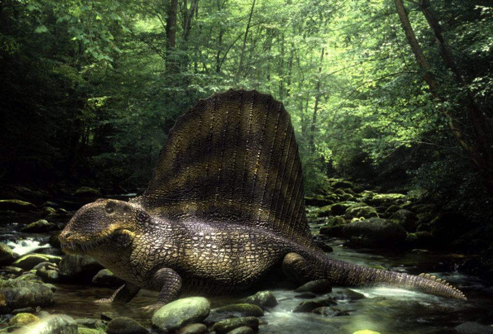
In the oceans, ammonites and ancient fish and sharks roamed the depths. Plant life on land was undergoing a revolution changing from the giant swamps of the Carboniferous to truly modern Gymnosperms taking dominance.
At this time in Earth’s history, the continents of the modern world were tightly locked together in the supercontinent known as Pangea. It is believed this assembly formed somewhere around 335 million years ago. It wasn’t to last, however.
The restless “gubbins” of the Earth would tear this assembly apart about 175 million years ago through a process known as plate tectonics. This gradual motion of the plates still continues today, in fact, Australia and India (they share the same plate), for example, are actually sliding northeast towards Asia and the central Pacific Ocean.
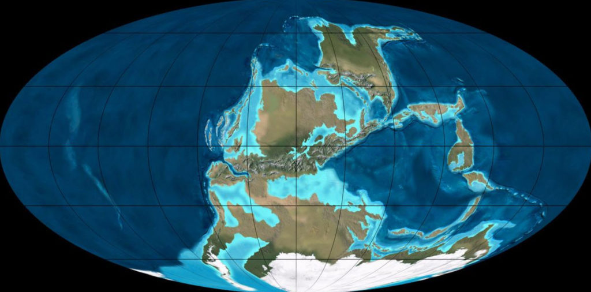
So there you go. That’s how the world looked 300 million years ago. Cool eh?
The Carboniferous Period (350-300 Million Years Ago)
Some of the animals that were present during the Carboniferous period were Amphibiamus lyelli, Which had long snouts, short limbs and flattened heads. Labachia is an early relative of they conifers. Crocodiles were there and hey are still present today. There were some dinosaurs but not as many as the Mesozoic era. There was also marine reptiles, lizards,snakes, birds and land snails. They also had many insects such as big dragonflies, mayflies, millipedes, scorpions and spiders. The millipedes scorpions and spiders were very good for the environment. There was hylonomos which were lightly built with deep strong jaws and slender limbs. Some other animals were gastropods, bonyfish and sharks.
A Look at Prehistoric Life During the Carboniferous Period.
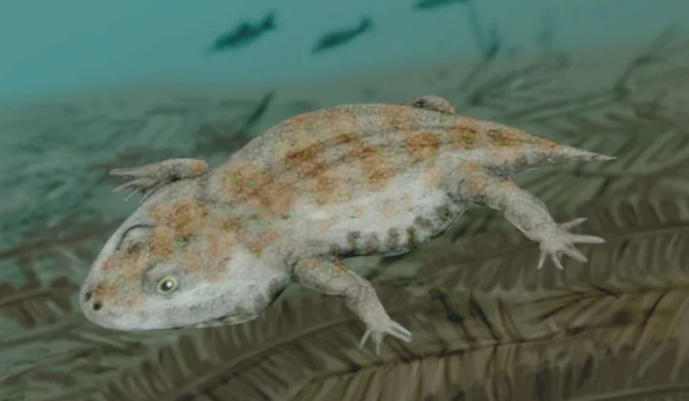
The name “Carboniferous” reflects the most famous attribute of the Carboniferous period: the massive swamps that cooked, over tens of millions of years, into today’s vast reserves of coal and natural gas. However, the Carboniferous period (359 to 299 million years ago) was also notable for the appearance of new terrestrial vertebrates, including the very first amphibians and lizards.
Climate and Geography
The global climate of the Carboniferous period was intimately linked with its geography.
During the course of the preceding Devonian period, the northern supercontinent of Euramerica merged with the southern supercontinent of Gondwana, producing the enormous super-supercontinent Pangea, which occupied much of the southern hemisphere during the ensuing Carboniferous.
This had a pronounced effect on air and water circulation patterns, which resulted in a large portion of southern Pangea being covered by glaciers and a general global cooling trend (which, however, didn’t have much effect on the coal swamps that covered Pangea’s more temperate regions).
In the swampy forests of the Carboniferous Period, 360 to 286 million years ago, dragonflies with two-and-a-half-foot wingspans darted among the giant ferns. Mayflies grew to canary size. Cockroaches appeared suddenly (as cockroaches do) for the first time. -Insects of the Oxygeniferous | Discover Magazine
Oxygen made up a much higher percentage of the Earth’s atmosphere than it does today, fueling the growth of terrestrial megafauna, including dog-size insects.
Terrestrial Life During the Carboniferous Period
The climate during the carboniferous period was tropical and mild temperatures. It was a uniform climate, and the early carboniferous period was relatively warm.
Amphibians. Our understanding of life during the Carboniferous period is complicated by “Romer’s Gap,” a 15-million-year stretch of time (from 360 to 345 million years ago) that has yielded virtually no vertebrate fossils.
What we do know, however, is that by the end of this gap, the very first tetrapods of the late Devonian period, themselves only recently evolved from lobe-finned fish, had lost their internal gills and were well on their way toward becoming true amphibians.
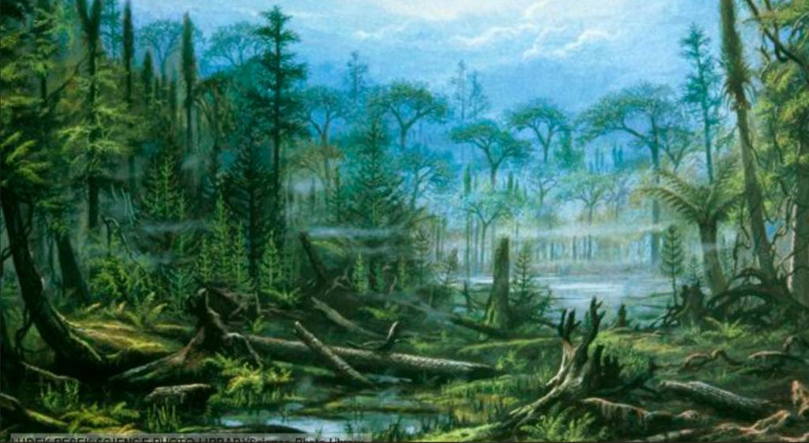
By the late Carboniferous, amphibians were represented by such important genera as Amphibamus and Phlegethontia, which (like modern amphibians) needed to lay their eggs in water and keep their skin moist, and thus couldn’t venture too far onto dry land.
Reptiles. The most important trait that distinguishes reptiles from amphibians is their reproductive system: The shelled eggs of reptiles are better able to withstand dry conditions, and thus don’t need to be laid in water or moist ground.
The evolution of reptiles was spurred by the increasingly cold, dry climate of the late Carboniferous period.
One of the earliest reptiles yet identified, Hylonomus, appeared about 315 million years ago, and the giant (almost 10 feet long) Ophiacodon only a few million years later.
By the end of the Carboniferous, reptiles had migrated well toward the interior of Pangea. These early pioneers went on to spawn the archosaurs, pelycosaurs, and therapsids of the ensuing Permian period. (It was the archosaurs that went on to spawn the first dinosaurs nearly a hundred million years later.)
Invertebrates. As noted above, the Earth’s atmosphere contained an unusually high percentage of oxygen during the late Carboniferous period, peaking at an astounding 35%.
This surplus was especially beneficial to terrestrial invertebrates, such as insects, which breathe via the diffusion of air through their exoskeletons, rather than with the aid of lungs or gills.
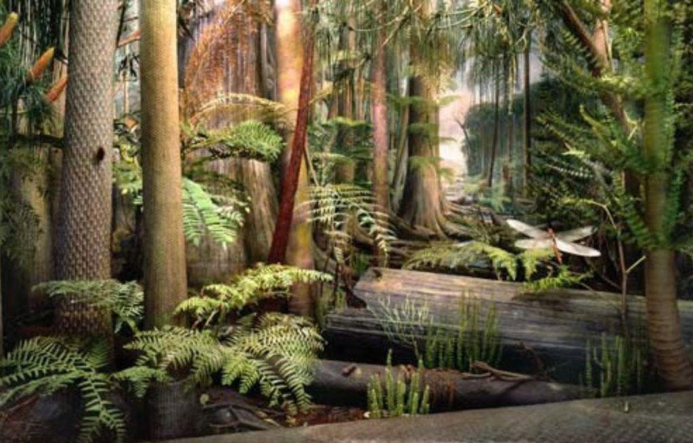
The Carboniferous was the heyday of the giant dragonfly Megalneura, the wingspan of which measured up to 2.5 feet, as well as the giant millipede Arthropleura, which attained lengths of almost 10 feet.
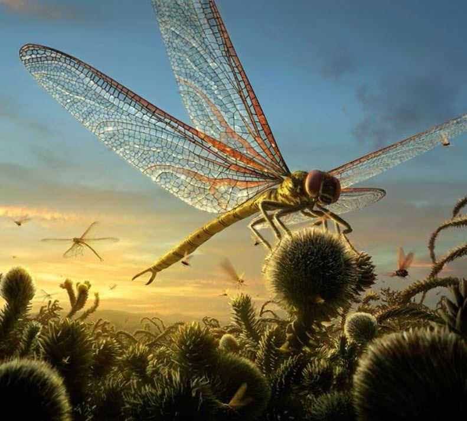
This is a drawing of the Dragon flies that were around during this time period. As you can see they look similar to the ones we have today except for their much larger size.
As well, as the domestically evolved Mantid species.
Insects of the Carboniferous Period
During the Carboniferous, numerous new insect families developed on Earth, with many insect species growing to incredible sizes. Fortunately, there’s a distinct lack of eight-foot-long millipedes today.
Bugs today are minuscule compared to the Carboniferous period, likely due to the way that insects breathe and how that system fails to hold up at large scales.
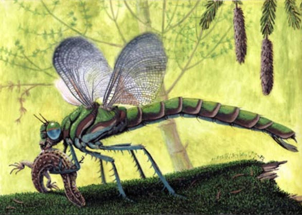
Insect respiration relies on a series of small tubes, or tracheae, spread throughout their bodies. Most insects don’t even “breathe,” exactly, but rather allow oxygen to passively diffuse throughout their respiratory systems. When an insect gets too large, these tracheae can’t collect enough oxygen to support their bodies.
Around 300 million years ago, however, Earth was saturated with oxygen. Today’s atmosphere is 21% oxygen, while the Carboniferous period had an atmosphere that was 35% oxygen. With this overabundance, insects’ respiratory systems could support larger bodies than what we think of as typical. Being big is, generally, a good thing: large animals stand to win in a fight, can store more energy for when resources are scarce, and retain heat more efficiently.
Animals that were passive absorbers of oxygen, like insects, started growing to huge sizes. And I mean HUGE.
There was a species of caterpillar that grew to 2.5 metres in length, a scorpion that grew to 70 cm and a dragonfly that had a wingspan of 75 cm. Yikes!
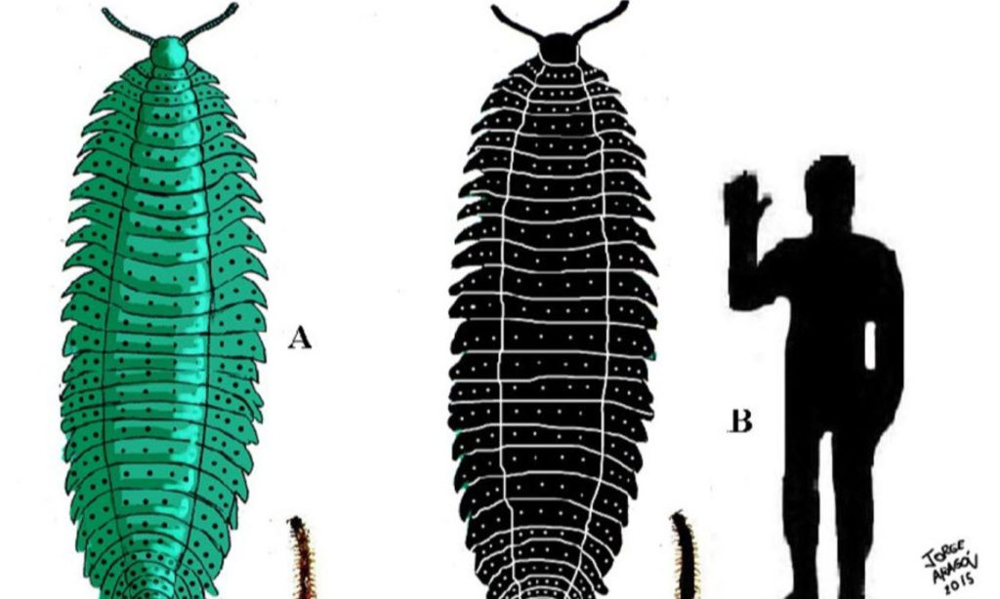
In fact, the size of many modern insects is only limited by ambient levels of oxygen. It’s not a genetic limit. More oxygen equals bigger size. There are scientists who are, right now, trying to grow large insects inside oxygen chambers. Someone should tell them to stop. PLEASE STOP.
For insects, there needed to be more oxygen in the air for this to happen. The extra oxygen didn’t suddenly appear, however; this change in the atmosphere can be attributed to the arrival of the first trees on the planet.
Prior to the Carboniferous period, trees didn’t exist. During this time, the first things that could properly be recognized as trees appeared. These were unlike the trees we know today—they were more like massive ferns with shallow roots that made them prone to falling over. They grew throughout the swamps that covered most of the planet during this period.
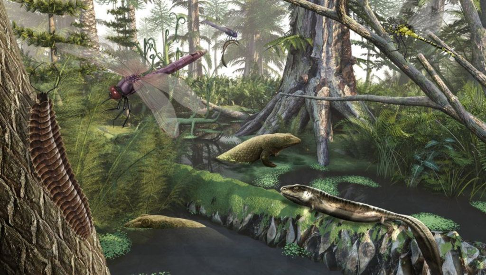
However, ancient trees and modern trees do share a crucial characteristic. They both are made of a cellulose and lignin composite—wood. Wood also happens to be an excellent store of carbon. As these trees grew taller and taller to compete for sunlight, they sucked more and more carbon out of the atmosphere and exchanged it for oxygen, fundamentally changing the composition of the atmosphere.
Wood was a novel material on the planet: the fungi and microbes capable of digesting it didn’t exist yet. When these trees fell over and died, they stayed in place. Tree trunks slowly accumulated over the swampy Earth, storing away much of the carbon in the atmosphere. This is where the name of this period of time comes from: Carboniferous is Latin for coal-bearing. In fact, as layers of dead trees piled on top of each other, they were gradually compressed into a massive layer of coal, which is where we get most of the coal we use today.
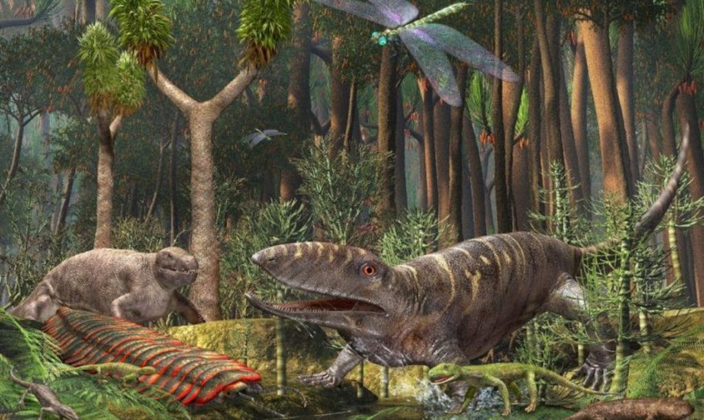
All of this paints a very surreal picture of ancient Earth. It would have been a moist, swampy place covered in endless fields of timber and giant ferns, crawling with Lovecraftian insects the size of your arm or larger.
On the WTF? “news”…
Scientists successfully breed giant prehistoric dragonflies
Crazed boffins in the USA say they have successfully carried out a Jurassic Park-style project in which enormous flesh-eating creatures from the remote prehistoric past have been successfully bred in the laboratory. Incomprehensibly this laboratory is not located on a remote island.
As many readers will doubtless be aware, during the late Paleozoic era the Earth was, if not exactly ruled or terrorized, at the least very seriously bothered by swarms of gigantic dragonflies with wingspans around 70cm across. The monster insects will have been all the more troublesome as dragonflies “need to hunt live prey”, according to experts.
One such expert is Dr John VandenBrooks, who has after a lengthy struggle managed to breed such much-enlarged dragonflies in his Arizona laboratory. The large size was achieved by enhancing atmospheric oxygen levels to 31 per cent, as seen in the Paleozoic (today’s air is only about 20 per cent O2).
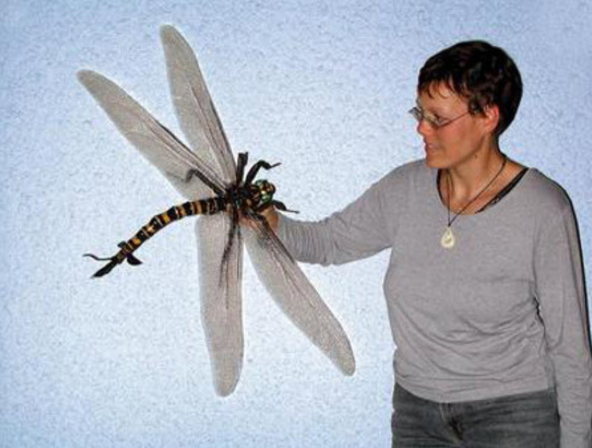
The hard bit, according to the prof, was not the creation of this artificially enriched (or “hyperoxic”) atmosphere but the actual care and feeding of the monstrous, prehistoric winged flesh-eaters.
“Dragonflies are notoriously difficult to rear,” boasts VandenBrooks. “We are one of the only groups to successfully rear them to adulthood under laboratory conditions.”
According to a statement issued by the Geological Society of America:
There is no such thing as dragonfly chow. As juveniles they need to hunt live prey and in fact undergraduate students Elyse Muñoz and Michael Weed working with Dr VandenBrooks had to resort to hand feeding the dragonflies.
It’s to be hoped that the unfortunate undergrads escaped from the hyperoxia chambers with their hands and other body parts intact. Plenty more where they came from, no doubt.
Not content with his creation of huge flesh-eating Paleozoic hyper-dragonflies, VandenBrooks also sought to breed greatly enlarged cockroaches and other horrors using similar hypercharged breeding pens. However this time the experiments were a failure, even once the hyper-roaches had been blasted with incredibly powerful energy rays at a handy atom-smasher.
The disappointed prof, perhaps assisted by surviving members of his team, is to reveal details of his accomplishments at a convention in Colorado.
Yikes!
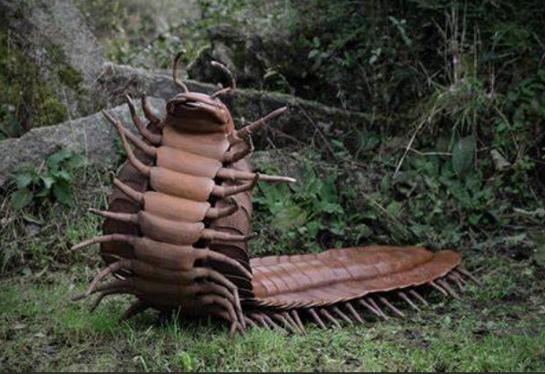
Marine Life During the Carboniferous Period
With the extinction of the distinctive placoderms (armored fish) at the end of the Devonian period, the Carboniferous isn’t especially well known for its marine life, except insofar as some genera of lobe-finned fish were closely related to the very first tetrapods and amphibians that invaded dry land.
Falcatus, a close relative of Stethacanthus, is probably the best-known Carboniferous shark, along with the much bigger Edestus, which is known primarily by its teeth.
As in preceding geologic periods, small invertebrates like corals, crinoids, and arthropods were plentiful in the Carboniferous seas.
Plant Life During the Carboniferous Period
The dry, cold conditions of the late Carboniferous period weren’t especially hospitable to plants—but that still didn’t prevent these hardy organisms from colonizing every available ecosystem on dry land.
The Carboniferous witnessed the very first plants with seeds, as well as bizarre genera like the 100-foot-tall club moss Lepidodendron and the slightly smaller Sigillaria.
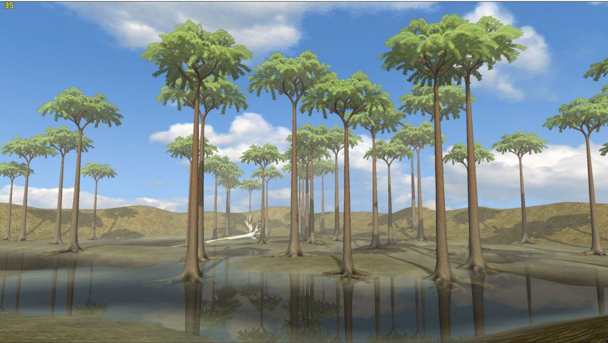
The most important plants of the Carboniferous period were the ones inhabiting the large belt of carbon-rich “coal swamps” around the equator, which were later compressed by millions of years of heat and pressure into the vast coal deposits we use for fuel today.
Bruno, a fellow forum member and moderator of the naturalistes forum has a ton of plant fossil examples and reconstruction info over on that site.. Take a look at each page and you'll see the closeup detail of fossils of the genus Lepidodendron and lots of reconstructions that will help your cause. He's also got a wealth of info on the other major plant members of the forest in that website....days and days worth of fossil images and reconstructions. It is a treasure! http://forums-naturalistes.forums-actifs.com/t2395-lepidodendron-sternberg-1820
Carboniferous period summary
During this period in time, there was one super continent on the earth. It had plentiful oxygen which permitted the evolution of insects to grow to enormous sizes and develop specialized intelligence’s over the years.
Most other creatures were still primitive and resembled proto-dinosaurs. These were smaller creatures that were just then finding their way on the food chain. There were NO apes, primates or humans.
Ancient Tracks
Yet…
Evidence for the existence of wheeled vehicles in antiquity has surfaced all over the world. They do so as petrified ancient tracks.
They are found in France, Spain, Italy, Malta, Kazakhstan, Ukraine, and even North America.
Prehistoric “Cart ruts”
"I believe we’re seeing the indicators of the civilization which existed sooner than the vintage introduction of this global,” Dr. Koltypin mentioned. “All those rocky fields had been coated with ruts left thousands and thousands of years in the past…we don’t seem to be speaking about human beings. We are coping with some more or less automobiles or all-terrain vehicles.” -Alienpolicy
A prehistoric site known formally as Misrah Ghar il-Kbir meaning the Great Cave in Maltese (and commonly referred to as Clapham Junction), is located at Siggiewi, near the Dingli Cliffs in Malta.
It is at this now famous site that what have been termed ‘cart ruts’ cut into the limestone have mystified all that have visited the area.
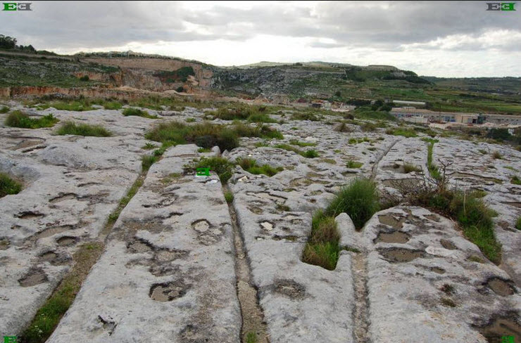
Likewise, a number of unusual tracks in stone are also visible on the island of Sicily at the Greek amphitheater called the Great Theater of Syracuse.
Interestingly, and paradoxically, most archaeologists have suggested that the Maltese tracks were probably created by Sicilian settlers who traveled to Malta around 2000 BC at the start of the Bronze Age.
Yet more tracks are to be found in Turkey.
Some at Sofca cover an area roughly 45 by 10 miles (72.42 by 16.09 km), and also in Cappadocia, where several pockets of tracks can be seen.
The many ruts discovered around the world have caused a great deal of controversy as to their purpose, age, and origin.
These mysterious objects remain up for debate, but due to the association and close proximity with megalithic structures, in Malta particularly, and due to the fact that many tracks are now submerged below the sea in that region, many researchers have concluded that the fossilized lines show signs of great antiquity.
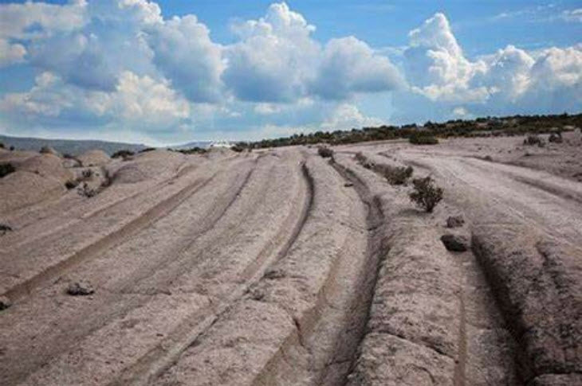
‘Cart rut’ tracks in Sofca, Turkey. (Author provided)
Bizarrely, considering the anomalous wheel print discovered in Ukraine that we have just discussed, a medieval city-fortress in the Crimean Mountains of Ukraine called Chufut-Kale lies in ruins, but also plays host to a number of cart ruts in stone like those at the nearby site of Eski-Kermen.
"We can think that ancient vehicles on wheels had been drove on comfortable soil, perhaps a rainy floor, and as a result of their weight the ruts had been so deep. Later those ruts – and all the floor round – simply petrified and secured all the proof,” -Alienpolicy
Dr. Alexander Koltypin is a geologist and director of the Natural Science Research Center at Moscow’s International Independent University of Ecology and Politology.
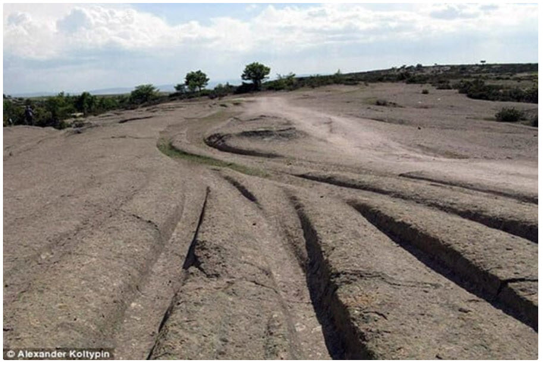
He has spent a great deal of time visiting these sites and comparing them to one another in search of similarities.
“I first saw tracks in stone - fossilized car or terrain vehicle traces (usually called cart ruts) on Neogen plantation surface (peneplene in Phrygian) plain in May 2014 (Central Anatolia Turkey). They were situated in the field of development of Middle and Late Miocene tuffs and tuffites and according to age analysis of nearby volcanic rocks, had middle Miocene age of 12-14 million years,” wrote Koltypin.
This particular region which Koltypin has researched further is relatively unknown and the guide books offer nothing in the way of information.
Whilst orthodox researchers claim that the tracks are simply the remnants of old petrified cart ruts from the kind of wheeled vehicles which donkeys or camels would have pulled, Koltypin has other ideas.
“I will never accept it,” he explained when confronted with the standard explanations. “I myself will always remember . . . many other inhabitants of our planet wiped from our history.”

Raddet ir-Roti Cart Ruts, Xemxija Heritage Trail in St. Paul’s Bay, Malta. (Frank Vincentz/ CC BY SA 3.0 )
Upon measuring the width and length of the tracks at the Phrygian Valley site, he is convinced that they were created by vehicles of a similar length to modern cars but with tires 9 inches (22.86 cm) wide.
With the depth of the impressions of the tracks in stone exceeding that which one would associate with small carts, Koltypin maintains that the vehicles responsible must have been much heavier.
"As a geologist, I will unquestionably inform you that unknown antediluvian (sooner than the flood) all-terrain vehicles drove round Central Turkey some 12-14 million years in the past. The technique of specifying the age of volcanic rocks may be very smartly studied and labored out,” -Alienpolicy
He theorizes that whichever civilization drove the heavy vehicles that created the tracks were most likely responsible for the many different but identical roads, ruts and underground complexes which are scattered around the entire Mediterranean, more than 12 million years ago.
Aware that the process of petrification can occur within a relatively short period, Koltypin insists that the heavy mineral deposits which coat the tracks and the visible erosion are suggestive of…
…of a greater antiquity;
…along with the surrounding underground cities, irrigation systems, wells, and more, which also show signs of being millions of years old in his view.
Koltypin wrote on his website,
‘We are dealing with extremely tough lithified (petrified) sediments, covered with a thick layer of weathering, that takes millions of years to develop, full of multiple cracks with newly developed minerals in them, which could only emerge in periods of high tectonic activity.’
It is evident that much research is needed to clarify the age and origin of the many tracks that are being discovered.
Discoveries which occur at multiple geographical locations, all over the world.
And yes, it is easy to simply state that they are the product of old carts which once trundled through these parts.
But actual investigation may well reveal far more complex and remarkable explanations which could well correlate with other things.
Other things, such as the mysterious remnants of an unknown ancient civilization as postulated by Alexander Koltypin.
The sheer presence of the fossilized wheel found in the Ukraine is certainly suggestive of the fact that the ancients may have had access to more technology and know-how than is currently accepted.
Especially when we KNOW that the world pretty much looked a little like this…
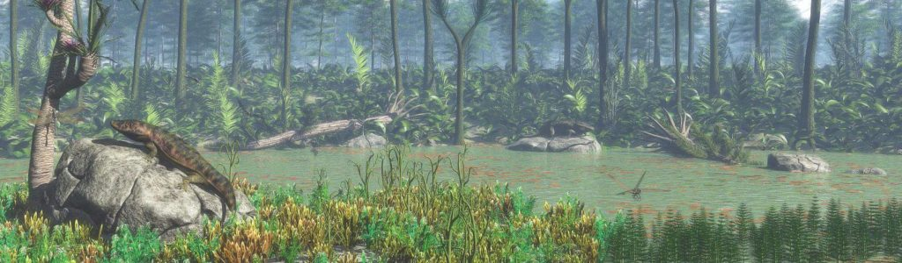
About the ruts
Don’t the ruts resemble trying to move carts through very marshy, muddy land? Just exactly the kind of terrain and environment that existed 300 million years ago?
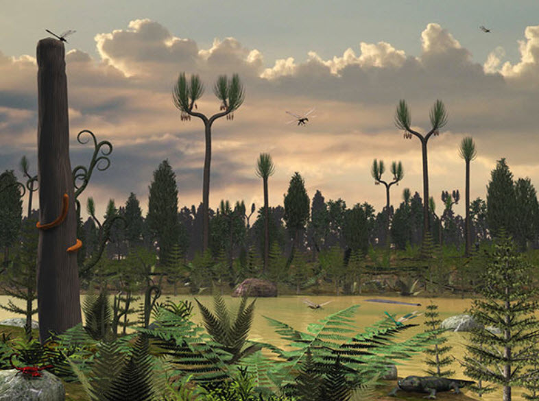
Conclusion
Dates are being bantered about of 300 million years, and 12 million years. In any event these dates pre-date apes, monkeys, primates and proto-humans.
Yet, we find the impossible.
Not only a wheel firmly embedded deep down inside a mine shaft, but ruts that take many centuries to harden into stone. Couple that with the discoveries of chains, metal lamps, bells, and other objects all pulled out of 300 million year old coal, it makes one wonder what is really going on.
Perhaps instead of trying to reationalize how these OOPART objects can exist relative to the history that is taught in school, perhaps we should realize that at signifigant points in time…
…in this case,
- 300 million years ago
- 12 million years ago
…that civilizations existed upon the earth. That these civilizations possessed tool-making ability, (as shown in other articles) metal forming ability, and the ability to work together in groups to create large megalithic structures that resemble boulders and rocks today.
And…
…instead of saying that mankind, or proto-humans created these objects, wouldn’t it be cleaner, more sensible, and easier to simply acknowledge that there must have been other civilizations, populated by other creatures living upon the earth at those far, far distant times.
A diminutive, and smaller than human, species… capable of living in a high oxygen content environment… where the oxygen made them grow to enormous sizes (though still smaller than humans). Capable of fabricating things out of wood, such as the Lepidodendron tree. And capable of metal working, which means that they had control over fire, and an understanding on how to mine ore.
And when we understand that point, we are truly able to see the insignificance of the human species on the grand scale of things.
Do you want more?
I have more posts like this in my OOPARTs Index here…
Articles & Links
You’ll not find any big banners or popups here talking about cookies and privacy notices. There are no ads on this site (aside from the hosting ads – a necessary evil). Functionally and fundamentally, I just don’t make money off of this blog. It is NOT monetized. Finally, I don’t track you because I just don’t care to.
- You can start reading the articles by going HERE.
- You can visit the Index Page HERE to explore by article subject.
- You can also ask the author some questions. You can go HERE to find out how to go about this.
- You can find out more about the author HERE.
- If you have concerns or complaints, you can go HERE.
- If you want to make a donation, you can go HERE.